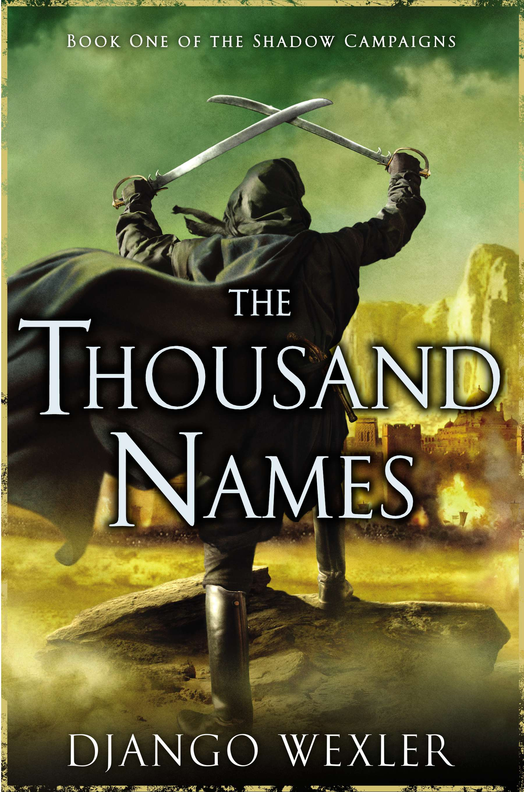
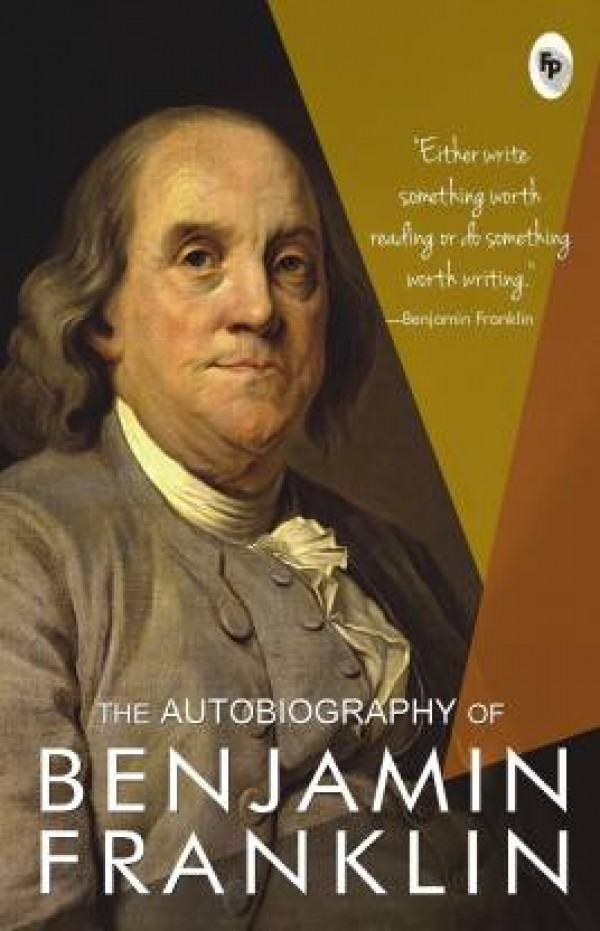

DAISY and the trouble with LIFE
AUTHOR : KES GRAY
You absolutely can't go anywhere at all when you're grounded, so Daisy has plenty of time to think about what she's done. If only her pocket money hadn't run out and if someone hadn't dropped a strawberry candy on the pavement and if strawberry candy wasn't Daisy's absolute favorite, things could have turned out differently.
LINEAR ALGEBRA

AUTHOR : GILBERT STRANG
Renowned professor and author Gilbert Strang demonstrates that linear algebra is a fascinating subject by showing both its beauty and value. While the mathematics is there, the effort is not all concentrated on proofs. Strang's emphasis is on understanding. He explains concepts, rather than deduces.
THE THOUSAND NAMES
AUTHOR : DJANGO WEXLER
The debut novel from author Django Wexler, The Thousand Names is one of the new wave of “flintlock” fantasy books – that is, fantasy set around the Napoleonic Era (we’re talking muskets and bayonets in terms of wartime technology).
THE AUTO-BIOGRAPHY OF
BENJAMIN FRANKLIN
AUTHOR : BENJAMIN FRANKLIN
The Autobiography of Benjamin Franklin is the traditional name for the unfinished record of his own life written by Benjamin Franklin from 1771 to 1790; however, Franklin himself appears to have called the work his Memoirs.